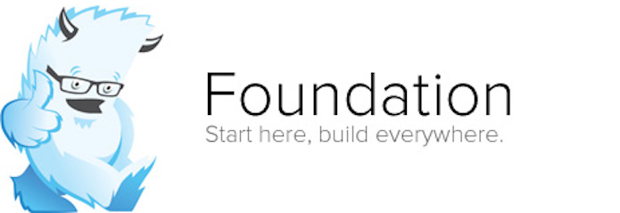
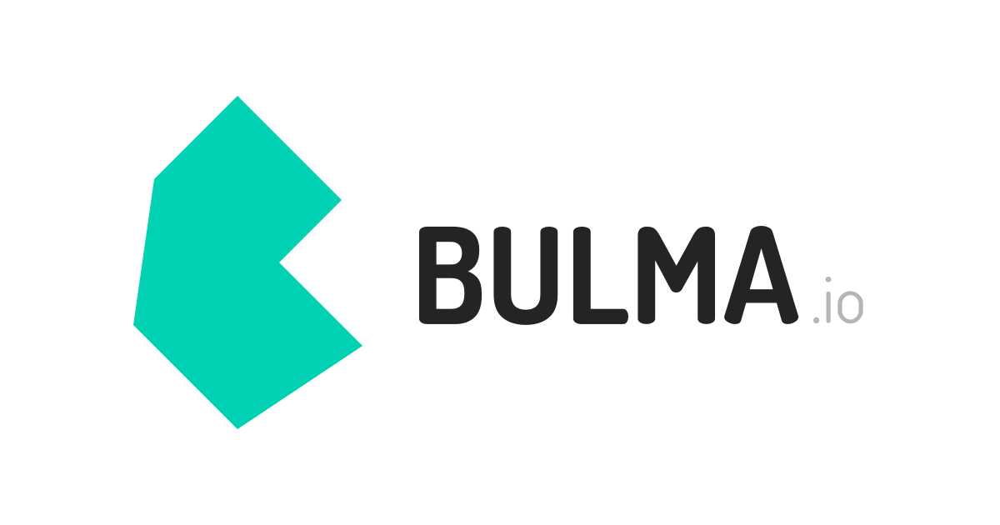

Los Frameworks CSS
Se han desarrollado soluciones para manejar los estilos de las páginas web de forma mas sencilla. Actualmente no es necesario diseñar un tema para un sitio web desde cero, ya que existen los frameworks CSS o marcos de trabajo CSS que vienen con estilos predeterminados y unas clases que nos permiten aplicar esos estilos de manera fácil a cualquier elemento.
En esta colección vamos a incluir los frameworks CSS actuales más importantes, los más usados por la comunidad y que ofrecen un estilo de desarrollo moderno.
Lo cierto es que la idea de framework CSS ya viene de lejos y llevan con nosotros más de una década, pero en la actualidad pocos son los frameworks que pueden competir en el mercado, ya que este tipo de herramientas ha evolucionado mucho, junto con el propio lenguaje, y se han hecho muy completos y sofisticados.
Bootstrap

Es el framework CSS más popular, en 2020, usado en infinidad de proyectos de todo tipo. Cuando apareció creó una tendencia de frameworks basados en componentes, capaces de implementar temas de diseño completos y complejos, aportando mucha sencillez y agilidad al desarrollo CSS y dotando a los programadores de herramientas para crear diseños consistentes con poco esfuerzo.
Durante sus años de existencia ha evolucionado mucho, incorporando novedades del estándar de CSS con rapidez y eliminando dependencias pesadas como jQuery que a día de hoy es innecesario en la mayoría de los proyectos.
Es muy común que las solicitudes de empleo se pida Bootstrap, ya que es una herramienta usada por muchas empresas.
Ir a la página oficial de BootstrapMaterialize CSS
Materialize es un framework CSS que implementa el tema de diseño "Material Design". Ofrece componetes material listos para usar, que se pueden integrar de una manera cómoda en los sitios web, consiguiendo un diseño guiado por las directrices de aplicaciones y sitios de Google
.Crea diseños consistentes que son fáciles de entender y familiares para los usuarios en general. Tiene muchos componentes que también implementan comportamientos dinámicos con Javascript y recientemente se actualizó para eliminar su dependencia con jQuery.
El framework es sencillo de usar, relativamente ligero, permite optimización y los componentes están altamente personalizados en su diseño.
Ir a la página oficial de Materialize CSSTailwind CSS

Este es un framework CSS que ofrece un enfoque diferente que otros como Bootstrap. Tailwind CSS en realidad no tiene muchos componentes, sino clases de utilidad que aplicar directamente sobre el CSS. Estos frameworks se llaman también "utility first" y ofrecen estilos CSS atómicos. Aunque también permite crear componentes, lo deja más del lado del desarrollador, que los podrá personalizar a su gusto.
Tailwind CSS tiene la característica de se muy maleable y adaptarse muy bien a lo que el desarrollador necesite. Con el framework puedes hacer builds de clases CSS totalmente personalizadas, que se parezcan o no a las que se ofrecen de manera predeterminada.
Ir a la página oficial de Tailwind CSSFoundation
Con Bootstrap y Materialize, Foundation es uno de los frameworks CSS basados en componentes más importantes del momento. Tiene muchos seguidores y mantiene una base de código que se actualiza con frecuencia para incorporar las novedades de CSS.
A diferencia de otros frameworks CSS ofrece un subset de sus herramientas orientado a la creación de emails, que tienen características de desarrollo distintos que los sitios web. Ofrece un set de herramientas para poder optimizarlo correctamente y construir un build que incluya solamente los componentes que se desean.
Ir a la página oficial de FoundationBulma
Este es un framework CSS basado en componentes que usa Flexbox de manera precisa para simplicidad del código.
Los componentes de Bulma son CSS puros, es decir, no tiene el set de componentes que requieren Javascript para funcionar. No obstante, tiene un montón de extensiones que sí incluyen componentes de todo tipo, dinámicos y con Javascript, usando varios frameworks, creados por terceros. Es sencillo de usar y de aprender y permite un desarrollo moderno.
Ir a la página oficial de BulmaReferencias
- Frameworks CSS. Desarrolloweb.com. https://desarrolloweb.com/colecciones/frameworks-cssa. Consultado el 21/09/2021